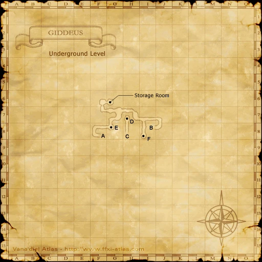

Before you begin
Be allied with Bastok, have Rank 2, and finish the preceding required story steps. Raise Rank Points if the mission is not offered.
People in this mission


Walkthrough
- Accept the mission and speak with Naji for the presidential briefing and Letter to the Consuls. This route visits San d’Oria first.
- At the Bastok consulate in Northern San d’Oria (K-10), speak with Baraka and Helaku, then Halver in the Chateau.
- Defeat Warchief Vatgit in Ghelsba Outpost and report to Helaku.
- Meet Melek at the Bastok consulate in Port Windurst (F-6), then Kupipi in Heavens Tower for the Dark Key.
- Reach Balga’s Dais through Giddeus. Win The Rank 2 Final Mission against Searcher and Black Dragon.
- Return to Melek for the report, then Naji in Bastok.
Important notes
- If you already chose Windurst first, use the alternate route in the reference. Its offering and final battlefield differ.
Locations and references
| Place / NPC | Location | Reference |
|---|---|---|
| Helaku | Northern San d’Oria (K-10) | Location reference |
| Melek | Port Windurst (F-6) | Location reference |
Completion and reward
Rank 3; 3,000 gil
Area maps
Open a zone below, then select a map to enlarge it. Match the named floors and grid coordinates in the steps; these are reference area maps, not a live position tracker.
Northern San d'Oria


Ghelsba Outpost


Port Windurst


Heavens Tower


Giddeus




References
HorizonXI Wiki: Bastok 2-3 · LandSandBoat mission definition
The route summary covers the original story. Other servers’ extra rewards, level-cap settings and Trust rules are not promises of Zenith behavior. Confirm battlefield entry conditions in game.
NPC map locations
| NPC | Game-map location |
|---|---|
| Naji | Metalworks (J-8) |
Additional level-75 reference
|
Walkthrough
- This mission requires a certain level of Rank Bar. If you completed Wading Beast, trade 5 crystals to a Conquest Overseer. Talk to a Bastok Gate Guard to receive the mission.
- Speak with Naji by the President's Office in Metalworks, a cutscene will play and they will escort you to President Karst.
- You will then be able to ask him questions about various topics and once you are done he will ask you to head to San d'Oria or Windurst.
San d'Oria to Windurst
- Head to the Consulate of Bastok in Northern San d'Oria. Speak with Baraka the receptionist and then speak with Helaku in the back room.
- Next go to Chateau d'Oraguille and talk to Halver (I-9). He will request that you to head to Ghelsba Outpost.
- Go out to H-7 in Ghelsba Outpost to find an Orc named Warchief Vatgit. Defeat him (he can be soloed at level 20).
- Return to the Consulate of Bastok in San d'Oria and speak agian with Helaku who will ask you to head now to Windurst.
- Head to Port Windurst and speak with Melek who represents the Consulate of Bastok. She will instruct you to head to Heavens Tower and speak to Kupipi, who will give a key to Giddeus.
- Purchase a map of Giddeus, find a level 25 party (with someone that can sleep), and bring antidotes (White Mages may need reraiser). Make sure your gear is level 25 or under, as you will be fighting a BCNM fight that is capped at Level 25. Invisible is only needed inside Giddeus. Once inside of Giddeus, head to (G-12) to zone into Balga's Dais.
- Upon entering the battlefield and receiving a cutscene, you will find Searcher and Black Dragon. The order of the fight is Searcher > Black Dragon. The Black Mage should use Elemental Seal + Sleep on the dragon while everyone kills the Searcher. Once Searcher is gone, the dragon will die quickly. This dragon has a very potent AOE poison attack that does 10 damage per tick, which makes antidotes necessary. He also may curse the tanks.
- Can be completed by a Pld/War and War/Mnk with a couple of healing potions.
- After you have defeated the BCNM, head back to Port Windurst and speak with Melek again. She will give you The Kindred Report.
- Having completed the above, take The Kindred Report back to Bastok, to the President's Office. Speak with Naji or Malduc once more, and a cutscene will commence. You will have achieved Rank 3.
Windurst to San d'Oria
- Talk to the embassy in Port Windurst, who will send you to Heavens Tower. Talk to Kupipi to receive the magical sword. Return to the consulate of Bastok in Port Windurst and speak with Gold Skull. He will exchange the "Sword offering" for a "Dull sword". Head to Giddeus.
- Go to the Treasure Room located in the tunnels of Giddeus (the 2nd map accessed by dropping down a hole at G-8), and once finding it, you will see it is guarded by an NPC Yagudo. He will tell you that the sword you have is not good enough to offer, and that he'd rather have the blade used by Eyy Mon the Ironbreaker, a named Yagudo that spawn not far away. Kill Eyy Mon the Ironbreaker until everyone has an Aspir Knife and then return to the Yagudo at the door to the treasure room again and trade him the Aspir Knife.
- Return to the embassy in Windurst and then go to San d'Oria.
- Talk to Helaku (K-10) in the Consulate of Bastok in Northern San d'Oria. They will direct you to Halver in Chateau d'Oraguille at I-9.
- You will need to form a level 25 party (highly suggested that you have a BLM or RDM for sleep) and make your way to Horlais Peak. You need to go through Ghelsba Outpost to get here. From Ghelsba Outpost you can go through either Yughott Grotto or Fort Ghelsba - follow the maps to make your way there.
- You will need Sneak and Invisible while in the higher level areas.
- The party must have equipment that is legal for the BCNM fight as it is capped at level 25. Only 6 members of the party will be allowed to enter this battlefield. When you're ready to enter, have one of the people who has the Mission active click on the Burning Circle and enter the battlefield. You will be fighting:
- Once you've defeated the BCNM, you will receive a key item, head back to the consolate in San d'Oria, and finally back to Bastok to complete the mission.
Game Description
- Mission Orders
- Gather information on San d'Oria and Windurst. The Bastokan consulates in those two countries will provide you with a detailed briefing.
- Mission Orders (San d'Oria -> Windurst)
- ;;Journey to San d'Oria
- Go to the highest camp in the Ghelsba Outpost and defeat Warchief Vatgit.
- Journey to Windurst
- Go to the deepest level of Giddeus and destroy the terrible beast terrorizing the Yagudo.
- Mission Orders (Windurst -> San d'Oria)
- ;;Journey to Windurst
- Go to Heavens Tower and acquire the magic sword to be offered to the Yagudo. Switch weapons at the consulate before taking it to the treasure chamber in Giddeus.
- Journey to San d'Oria
- Investigate the Yughott Grotto deep inside the Ghelsba Outpost.
Adapted from Eden Wiki: The Emissary · Contributors and history · CC BY-SA 4.0. Revision 8680. Layout, links and optional background text adapted for Zenith.